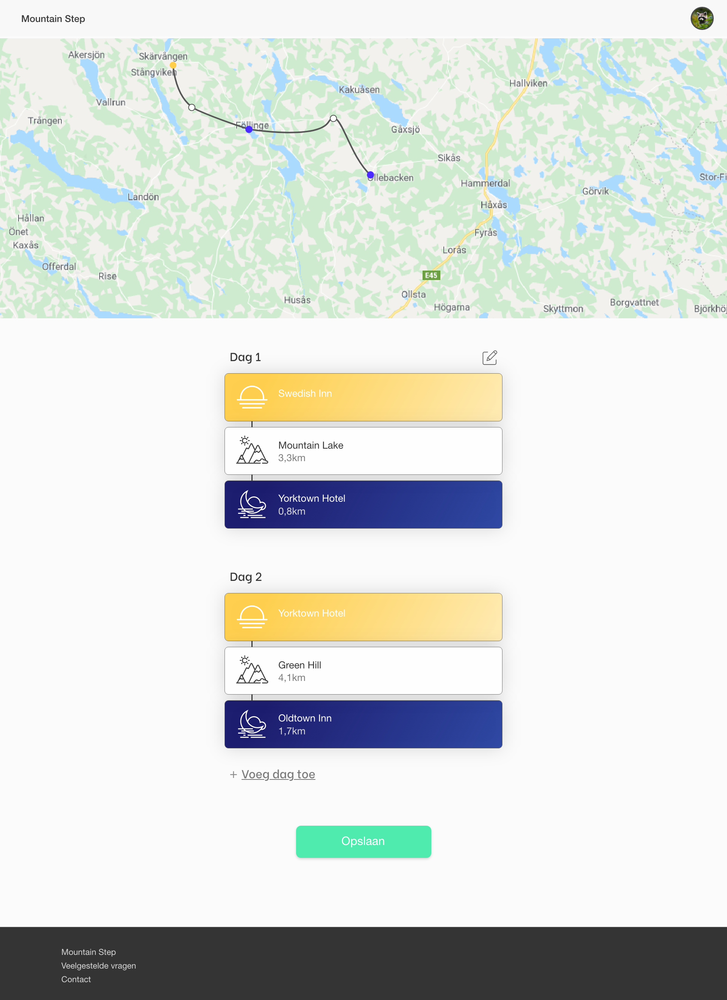
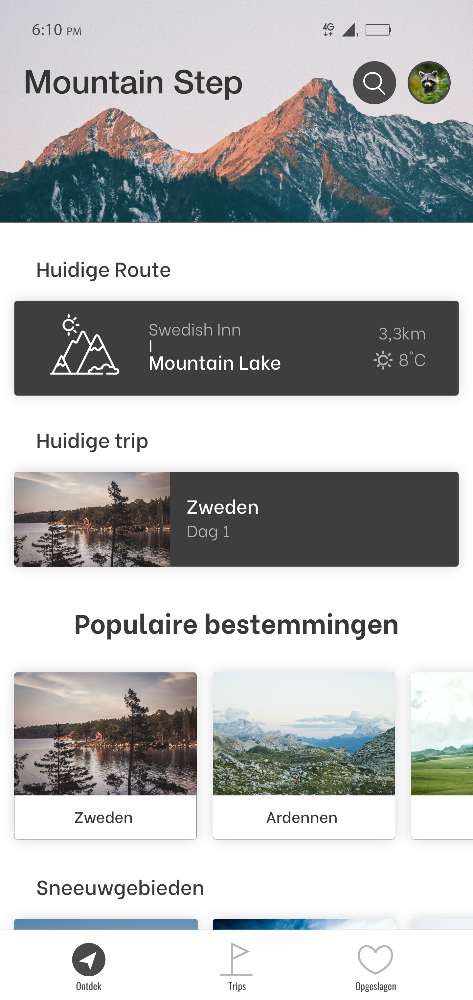
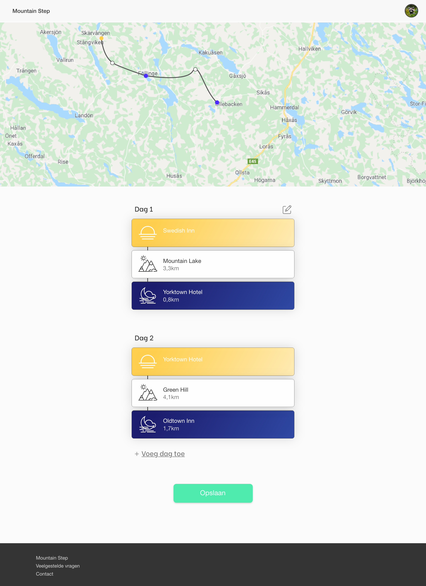
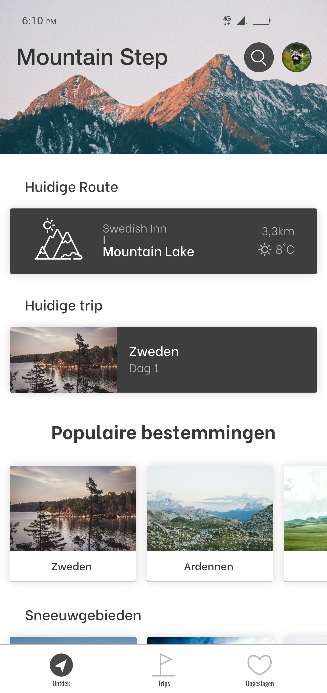
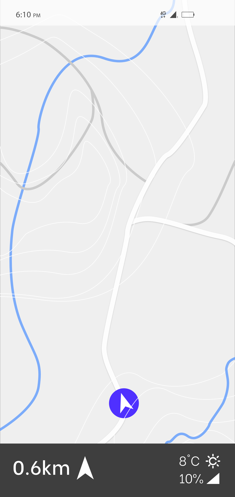
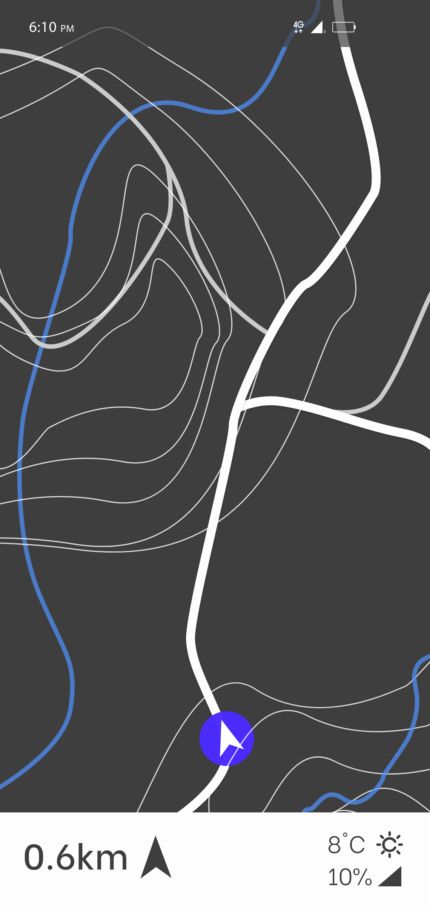
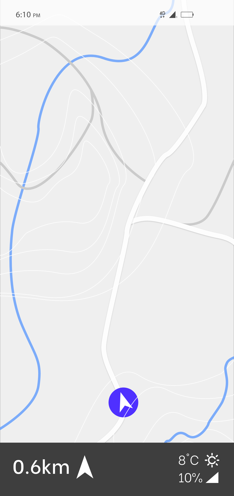
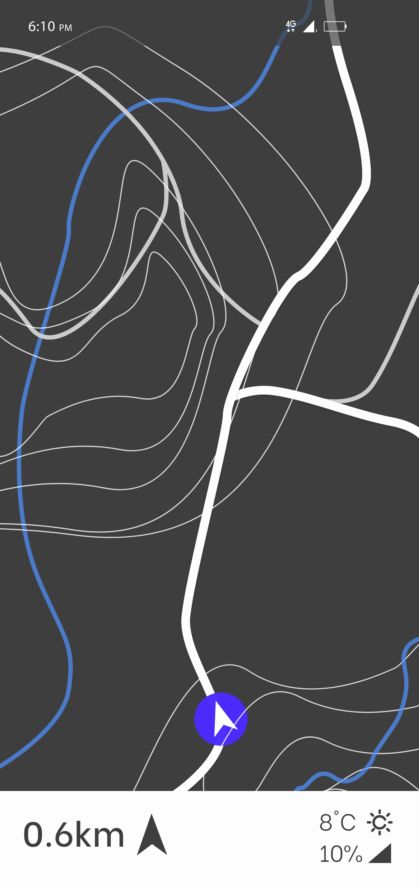

Verbeelden en Maken
Mountain Step
Voor een individueel project in het tweede leerjaar, heb ik een concept voor hikers bedacht en ontwikkeld in de vorm van een multi-device prototype voor web en smartphone. De app kan hikers die graag op reis willen gaan in het buitenland helpen, doordat de eindgebruiker verschillende locaties toevoegt aan zijn of haar reis en zo een planning maakt. Vervolgens kan de eindgebruiker zodra de reis start een route tussen iedere opgeslagen locaties bekijken.
Situatie
Voor dit project was er niet zo zeer een opdrachtgever, er werd gevraagd door school een concept te bedenken in de vorm van een multi-device prototype.
Taak
Het concept moest aansluiten voor een specifiek soort reiziger, in mijn geval Hikers.
Activiteiten
Het ontwerpen voor verschillende schermen was de grootste focus van dit project, ook design patterns toepassen in het ontwerp was belangrijk voor dit project.
Resultaat
De prototypes van de mobiele app en website waren mijn eerste prototypes die gemaakt waren in Adobe XD, ik heb hierdoor o.a. bepaalde elementen van het scherm kunnen vast zetten (zoals de navbar onderaan het scherm) waardoor de prototype meer tot leven komt.
Reflectie
Door te beginnen met het gebruiken van Adobe XD heb ik een veel beter idee gekregen over de mogelijkheden die er zijn in het maken van prototypes. Door middel van bijvoorbeeld animaties toevoegen, kan je een prototype echt tot leven maken en dit is iets wat ik graag zou willen toepassen in de toekomst.

 



 



Rationale
De onderstaande link laat uitgebreider zien hoe het concept gebruikt kan worden:
Zie hier de rationale.